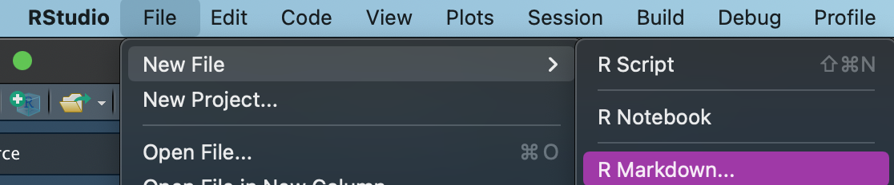
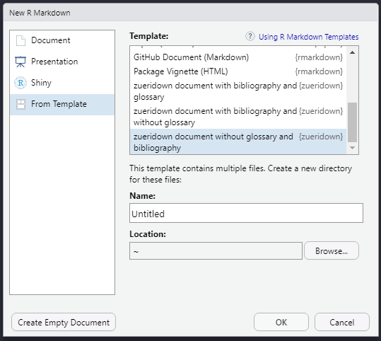
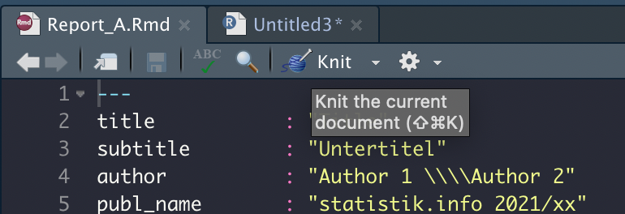
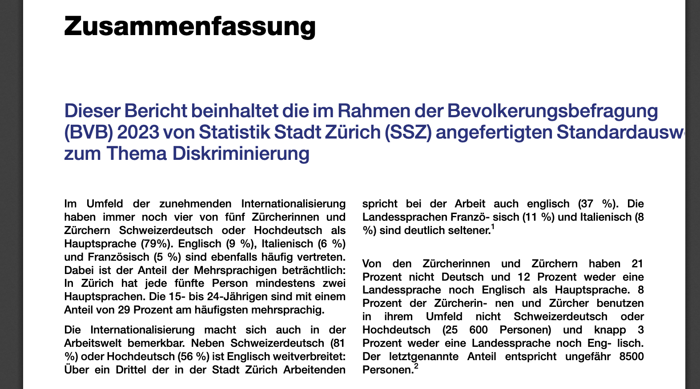
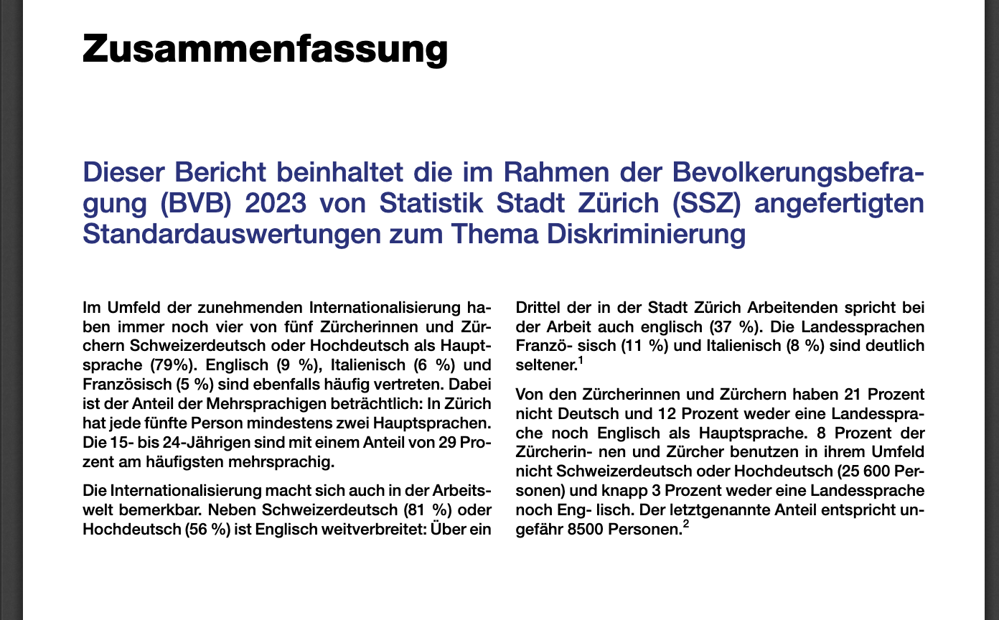

zueridown makes it easy to generate customized R Markdown PDF documents that follow the corporate design of the city of Zurich. It is based on the CRAN package indiedown, which lays down the framework for customization.
Installation
Install tinytex
To create a PDF document using zueridown you need some LaTeX packages. To install those packages you can install tinytex using the following lines of code in R:
install.packages('tinytex')
tinytex::install_tinytex()
# to uninstall TinyTeX, run tinytex::uninstall_tinytex() tinytex automatically will install all packages needed for zueridown. However, if you get an error due to some missing package, you can use the following helper functions:
library(tinytex)
tlmgr_install('psnfss') # install the psnfss package
tlmgr_update() But if you still have some trouble, it is better to use:
tinytex::reinstall_tinytex()You can find more information on tinytex here: https://yihui.org/tinytex/
Install zueridown
Install from .tar.gz file
To install from a local source file, store zueridown_main.tar.gz at an arbitrary location on your computer.
In R Studio, in the Packages pane, click Install and select the option Install from Package Archive File. Browse to the location of the file and install it. Alternatively, you can download the package from https://github.com/cynkra/zueridown, by clicking Clone or download, extract it to any location, e.g., to your Desktop.
Then, run:
remotes::install_local("<path_to_location>/zueridown-main", dependencies = FALSE)Install from GitLab
The package can also be directly installed from here with the appropriate git credentials. If you are already cloning repositories from GitLab, you can simply run:
remotes::install_git("https://cmp-sdlc.stzh.ch/OE-7035/ssz-da/zueriverse/zueridown")Otherwise you need to create a personal access token in your settings, and use this as a password, together with your GitLab username.
Basic Template
After installation, a new R Markdown template is available in R Studio. To open, use File, New File, R Markdown.

Click From Template and select one of the templates:
-
zueridown document with glossary and without Bibliography. -
zueridown document with bibliography and glossary. zueridown document with bibliography and without glossaryzueridown document without glossary and bibliography

After saving the file on your computer, you can use the Knit button to produce a basic PDF document based on this template.

Using other packages from the zueriverse
More zueri-specific packages are available on github: zueritheme provides a ggplot-theme that is styled according to the city’s CI/CD, zuericolors provides the CI/CD colors, and zuericssstyle has css for styling other types of documents such as html.
zueritheme and zuericolors are automatically installed with zueridown.
FAQ and Troubleshooting
How to implement Parameterized reports?
You can use parameters in R Markdown reports using the zueridown template. However, two relevant conditions take place.
First, it is not possible to include in the YAML r calls like r params$country. Therefore, if your document has a title or a subtitle using a parameter, you should use the title and/or subtitle parameters in the function cd_page_title_box or cd_page_title_box accordingly, for instance:
cd_page_title_box(
title = paste0("Stadt Zürich: Auswertung", params$country, "verkehrszählstelle", params$Name),
title_size = "40pt",
color_palette = cd_color_palette("palette1"),
)Second, you should use the zueridown output format to render the parameterized report. Consequently, after creating a zueridown template (for instance: "report.Rmd") use the option output_format as in the following example:
rmarkdown::render(
input = "report.Rmd",
output_format = zueridown::zueridown(),
output_file = "Country_1_report.pdf",
params = list(country = "Switzerland", Name = "name_1"))How to implement full width tables?
The option full_width = T in kableExtra uses the tabu LaTeX package, but this package has some problems with colors and other functionalities. To solve this zueridown has the function full_width_tabular . The function changes the LaTeX package tabu for tabularx. To use it properly follow next steps:
- specify the chunk options:
```{r, out.width = "\\textwidth", results='asis', warning=FALSE}. - Set in the code of the table
full_width = T - Add the function
full_width_tabularat the end of the code table.
Example
```{r tab1, out.width = "\\textwidth", results='asis', warning=FALSE}
kableExtra::kable(head(iris),
col.names = gsub("[.]", " ", names(iris)),
table.env='table',
caption = "\\textbf{Titel der Tabelle} \\newline Untertitel der Tabelle",
booktabs = T) %>%
kable_styling(font_size = 9, full_width = T, latex_options = "HOLD_position") %>%
row_spec(0,bold=TRUE) %>%
row_spec(2,background="red") %>%
full_width_tabular()
```Issues with Hypenation or text beyond the margins
If the document does not have proper hypenation in any line, or there are some texts which extend beyond the margin of the page, i.e. if the document looks like:

Use the commands from the tinytex package to install or update the babel-german and hypehn-german LaTeX packages:
tinytex::tlmgr_install ("babel-german")-
tinytex::tlmgr_install ("hyphen-german").
Afterwards your text should contain proper hyphenation, for instance:
